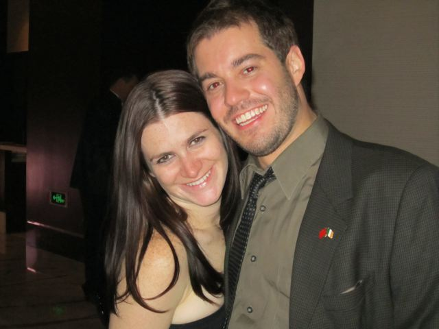

The First Dance:
On March 19, 2011, Charlie and Kate both attended the Annual Irish Ball in Beijing, China, but not together. At the ball, Charlie spotted Kate waiting for a glass of wine at the bar. He waited until she was alone and then asked her to dance. She said yes and the two hit it off immediately. For their first date, Charlie took Kate to the Spanish restaurant Agua in Beijing.

Almost as soon as they started dating, Charlie and his parents went to Australia to visit his brother Matthew who was living there with his then girlfriend, now wife Jean. When he returned, Kate immediately flew to Ulaanbaatar, Mongolia for a conference. Despite this hiccup in the beginning of their courtship, they stayed in contact throughout their travels and continued dating when they were both back in Beijing.
In Love:
Charlie & Kate took their first trip together in May to Shanghai to see Deadmau5 (a DJ Kate had never heard of). This was followed by a long weekend in Korea, where they planned to go hiking but Charlie tore a ligament just before they left, meaning he was on crutches for the entire vacation. Korea was where the two first said "I love you". Plenty of other trips followed: the Philippines, Hong Kong, Minneapolis, Lexington, Shanghai, Korea, Yunnan and Scotland.
The Proposal:
During the fall of 2012, Charlie spent a lot of time away from their home to travel to Dongguan, China for work. His parents were coming to visit in late September, but Charlie told Kate he would be in Dongguan until they arrived in Beijing on September 20th. Charlie then colluded with Kate's friend Sara to get her to a restaurant on Wednesday, September 19th (18 months to the day they meet at the Irish Ball -- a total accident). Sara lured Kate to a fancy restaurant by telling her that she was having a taste testing for her one-year wedding anniversary celebration. Sara even told Kate that she planned to dress up and wear high heels, forcing Kate to go home from work and change. When Kate got to the restaurant, she was taken into a private room with 2 dozen roses and even more candles. Charlie was waiting for her, took her out into their own private bamboo garden and popped the question. They celebrated with a bottle of champagne and an 8-course dinner.